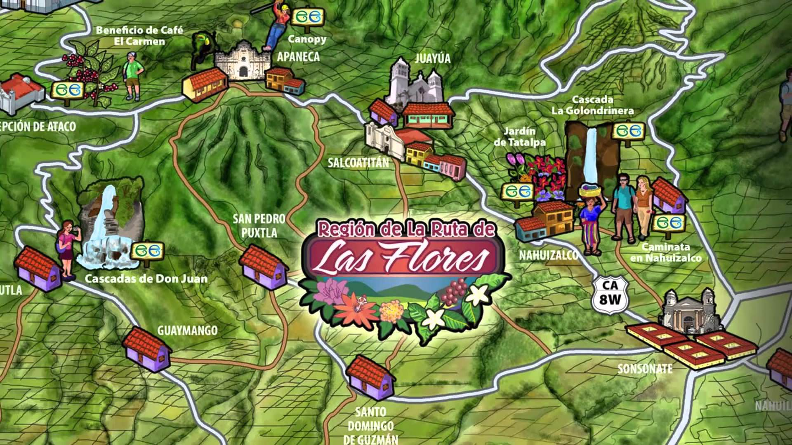

Ruta de las flores
Home
El Pital
Ruta de la Flores
lago de Coatepeque
Lugares que se visitan en La Rutas de las Flores

Pueblos
kilometros
Apaneca
4 h 27 min (250.5 km)
Tacuba
4 h 40 min (275.1 km)
Concepción de Ataco
4 h 33 min (268.7 km)
Juayúa
4 h 25 min (249.6 km)
Salcoatitán
4 h 27 min (243.0 km)
Nahuizalco
4 h 19 min (216.3 km)